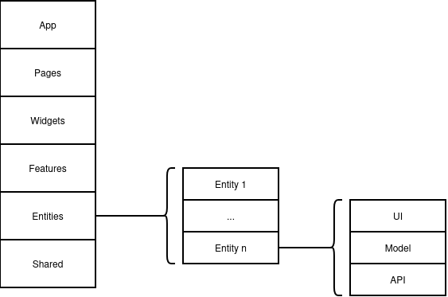
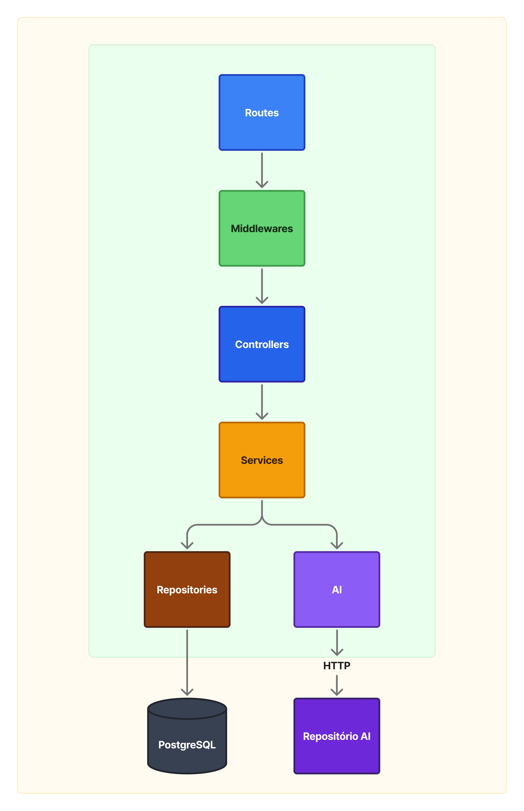

Decisões Arquiteturais
Estilo Arquitetural
Frontend
As Camadas (Feature-Sliced Design)
A arquitetura é dividida em camadas, organizadas da mais externa (acoplada ao projeto) para a mais interna (genérica e reutilizável), sem deixar de levar em conta o domínio de negócio na organização. A regra fundamental é que uma camada superior pode importar recursos de uma inferior, mas nunca o contrário. A seguir estão descritas as camadas a serem utilizadas no frontend:
app/: Configurações globais, roteamento base, provedores de contexto e estilos globais da aplicação. É o ponto de inicialização do sistema.pages/: A composição final de uma tela. As páginas reúnemwidgetsefeaturese lidam com os parâmetros das rotas, mantendo-se o mais limpas possível de lógicas complexas.widgets/: Blocos independentes e complexos de interface que unem várias funcionalidades em um único componente estrutural (ex: umHeadercompleto ou umSidebar).features/: Funcionalidades modulares que entregam valor de negócio direto ao usuário (ex: a ação de fazer login, enviar um formulário). Contêm as interações do usuário e as chamadas à API REST correspondentes.entities/: O conceito central dos dados de negócio (ex: Usuário, Produto, Cliente). Contém as tipagens, as interfaces e o gerenciamento do estado global desses dados.shared/: Código puramente técnico e desconectado das regras de negócio. Inclui componentes visuais genéricos (botões, inputs formatados) e configurações base de infraestrutura (como o cliente HTTP para as chamadas REST).
Com excessão de app/ e shared/, todas as camadas podem ser divididas em subcamadas de domínio (slices), seguindo o princípio de tornar o projeto mais compreensível e estável diante de mudanças nos requisitos de negócio. As camadas app/ e shared/ e as subcamadas de domínio (slices) consistem de segmentos, que agrupam código de acordo com seu propósito (componentes de interface, comunicação com o backend, etc.). A seguir é apresentado o diagrama da arquitetura adotada:

BFF (Backend-For-Frontend)
Função e camadas internas
O BFF é um proxy 100% orquestração entre o Frontend e os serviços de domínio (Usuario-Service, Quiz-Service e AI futuro). Não possui regra de negócio nem persistência. Suas responsabilidades:
- Receber todas as chamadas vindas do Frontend (único endereço público da plataforma do lado dos serviços).
- Validar o JWT (assinatura/expiração) com
JWT_SECRET_KEY. - Injetar
X-Internal-Token(segredo compartilhado com os serviços internos) e cabeçalhos auxiliares (X-User-Id,X-User-Papel,X-User-Status) nas chamadas downstream. - Rotear por path:
/api/v1/autenticacao/*,/api/v1/admin/*,/api/v1/exemplos/*→ Usuario-Service;/api/v1/questoes/*→ Quiz-Service;/api/v1/ia/*→ AI (atualmente 503 enquanto AI estiver vazio). - Padronizar respostas de erro vindas do downstream.
Camadas internas do BFF:
Routes: definem prefixos, marcam rotas públicas/autenticadas e despacham para o cliente HTTP correto.Middlewares:autenticacao(validação local de JWT),proxy(repasse genérico),tratamento-erros(mapeia erros downstream e exceções).Clients: instâncias Axios para Usuario-Service (backend.client), Quiz-Service (quiz.client) e AI (ai.client, opcional viaAI_URL).
Estrutura de pastas — BFF
2026-1-AnatoQuizUp-BFF/
├── src/
│ ├── config/
│ ├── routes/
│ ├── shared/
│ │ ├── clients/
│ │ ├── constants/
│ │ ├── errors/
│ │ ├── middlewares/
│ │ ├── types/
│ │ └── utils/
│ └── server.ts
├── tests/
├── Dockerfile
├── eslint.config.js
├── jest.config.cjs
├── tsconfig.json
└── package.json
Fragmentacao Usuario-Service e Quiz-Service
Decisao
O dominio de quiz deixa de pertencer ao Usuario-Service e passa a ser responsabilidade do repositorio 2026-1-AnatoQuizUp-Quiz-Service.
- O Usuario-Service fica responsavel por autenticacao, identidade, administracao de usuarios e exemplos tecnicos.
- O Quiz-Service fica responsavel por temas, questoes, alternativas, resolucoes e storage de imagens de questoes.
- Cada servico de dominio possui banco proprio: Auth DB, Quiz DB e AI DB futuro.
- O Quiz-Service guarda IDs de usuarios como referencias externas, sem FK para o banco do Usuario-Service.
- O Quiz-Service valida autorizacao pelo JWT assinado pelo Usuario-Service. Headers
X-User-*sao informativos e nao sao fonte de verdade.
Consequencias
- Migrations e schemas de Auth e Quiz evoluem separadamente.
- O Frontend nao muda seu contrato publico: continua chamando
/api/v1/questoespelo BFF. - Consultas futuras que precisarem mostrar nome/email de autores devem ser compostas por API, preferencialmente no BFF com lookup em lote.
- A feature de jogo/resolucao por aluno deve ter especificacao propria quando for implementada; esta migracao preserva apenas o fluxo ja existente.
Backend
Diagrama de Componentes
A arquitetura do backend segue uma organização em camadas para separar as responsabilidades do processamento das requisições, da regra de negócio, da persistência de dados e da comunicação com serviços externos. O fluxo de dependência ocorre de cima para baixo: uma camada superior pode chamar a camada imediatamente inferior para delegar uma responsabilidade, mas a camada inferior não deve depender da camada superior. Assim, por exemplo, um Controller pode acionar um Service, mas um Service não deve conhecer nem chamar um Controller.
As camadas do backend são organizadas da seguinte forma:
Routes: definem os endpoints da API e direcionam cada requisição HTTP para os middlewares e controllers correspondentes.Middlewares: executam validações e controles transversais antes da regra principal da rota, como autenticação, autorização, tratamento de erros e validação de dados.Controllers: recebem a requisição já encaminhada pela rota, extraem os dados necessários, chamam os services e montam a resposta HTTP enviada ao cliente.Services: concentram as regras de negócio da aplicação. Eles coordenam as operações do domínio e decidem quando acessar dados persistidos ou serviços externos.Repositories: isolam o acesso ao banco de dados, permitindo que os services solicitem consultas e gravações sem conhecer detalhes da implementação do PostgreSQL.AI: centraliza a comunicação com o serviço externo de inteligência artificial, encapsulando chamadas HTTP, montagem de payloads e interpretação das respostas recebidas.PostgreSQL: representa o banco de dados relacional utilizado para persistir os dados principais da aplicação.Repositório AI: representa o serviço externo de inteligência artificial consumido pelo backend via HTTP.
Essa divisão reduz o acoplamento entre as camadas, facilita a manutenção dos módulos e permite testar cada responsabilidade de forma mais isolada.

Estrutura de Pastas
Frontend
A seguir está um exemplo do uso do Feature-Sliced Design na implementação do frontend:
src/
├── app/
├── pages/
├── widgets/
├── features/
├── entities/
└── shared/
app/: concentra a inicialização da aplicação, configurações globais, provedores, estilos e definição base de rotas.pages/: representa as páginas finais da aplicação, compondowidgetsefeaturesconforme a navegação do usuário.widgets/: reúne blocos mais complexos de interface, formados por múltiplos componentes e comportamentos.features/: implementa funcionalidades orientadas ao usuário, como autenticação, envio de formulários e fluxos de interação.entities/: organiza os modelos centrais do domínio, incluindo tipagens, estado e regras relacionadas às entidades do sistema.shared/: contém recursos reutilizáveis e desacoplados do domínio, como componentes genéricos, utilitários e infraestrutura técnica.
Backend
A API backend adota uma estrutura modular para separar configuração, domínio, utilitários compartilhados e apoio à manutenção do projeto:
anatoquizup-api/
├── .github/
│ ├── ISSUE_TEMPLATE/
│ └── workflows/
├── prisma/
│ └── migrations/
├── src/
│ ├── config/
│ ├── modules/
│ │ └── domain/
│ │ ├── dto/
│ │ └── __tests__/
│ └── shared/
│ ├── constants/
│ ├── errors/
│ ├── middlewares/
│ ├── types/
│ └── utils/
└── tests/
.github/: armazena arquivos de automação e apoio ao fluxo de colaboração do repositório..github/ISSUE_TEMPLATE/: define modelos padronizados para abertura de issues..github/workflows/: concentra fluxos de integração contínua e automações do GitHub Actions.prisma/: reúne os artefatos de persistência e versionamento do banco de dados.prisma/migrations/: guarda o histórico de migrations aplicadas ao esquema do banco.src/: contém o código-fonte principal da API.src/config/: centraliza configurações da aplicação, como variáveis de ambiente, integração de serviços e parâmetros globais.src/modules/: organiza as funcionalidades da API por módulo de negócio.src/modules/domain/: representa um módulo funcional da aplicação com rotas, controller, service, repository e schemas relacionados.src/modules/domain/dto/: concentra os tipos e contratos de entrada e saída usados pelo módulo.src/modules/domain/__tests__/: reserva os testes automatizados específicos do módulo.src/shared/: agrupa recursos compartilhados entre diferentes módulos da aplicação.src/shared/constants/: define constantes reutilizadas em diferentes partes do backend.src/shared/errors/: implementa classes e códigos de erro padronizados para tratamento de exceções.src/shared/middlewares/: reúne middlewares reutilizáveis, como autenticação e autorização.src/shared/types/: centraliza tipagens comuns utilizadas em múltiplos módulos.src/shared/utils/: contém funções utilitárias e helpers compartilhados.tests/: concentra a estrutura de testes em nível de aplicação.
Referências
Feature-Sliced Design. Overview. Disponível em: https://feature-sliced.design/docs/get-started/overview. Acesso em: 17 abr. 2026.
Histórico de Versão
| Data | Versão | Descrição | Autor(es) |
|---|---|---|---|
| 14/04/2026 | 1.2 | Adicionando estrutura de pastas frontend | Pedro Cabeceira |
| 17/04/2026 | 1.3 | Adicionando diagrama arquitetural frontend | João Vitor |
| 18/04/2026 | 1.4 | Adicionando estrutura de pastas backend | Bruno Ricardo |
| 26/04/2026 | 1.5 | Reorganização da seção de arquitetura, concentrando arquiteturais e estruturas adotadas em uma página só | Ana Catarina |
| 27/04/2026 | 1.6 | Adicionando arquitetura de componentes do backend | Bruno Ricardo |
| 05/05/2026 | 1.7 | Adicionando o BFF como estilo arquitetural separado, com função e estrutura de pastas (PRD: Migração para Arquitetura com BFF) | Miguel Moreira |
| 13/05/2026 | 2.0 | Registra a fragmentacao Usuario-Service / Quiz-Service com bancos separados | Miguel Moreira |